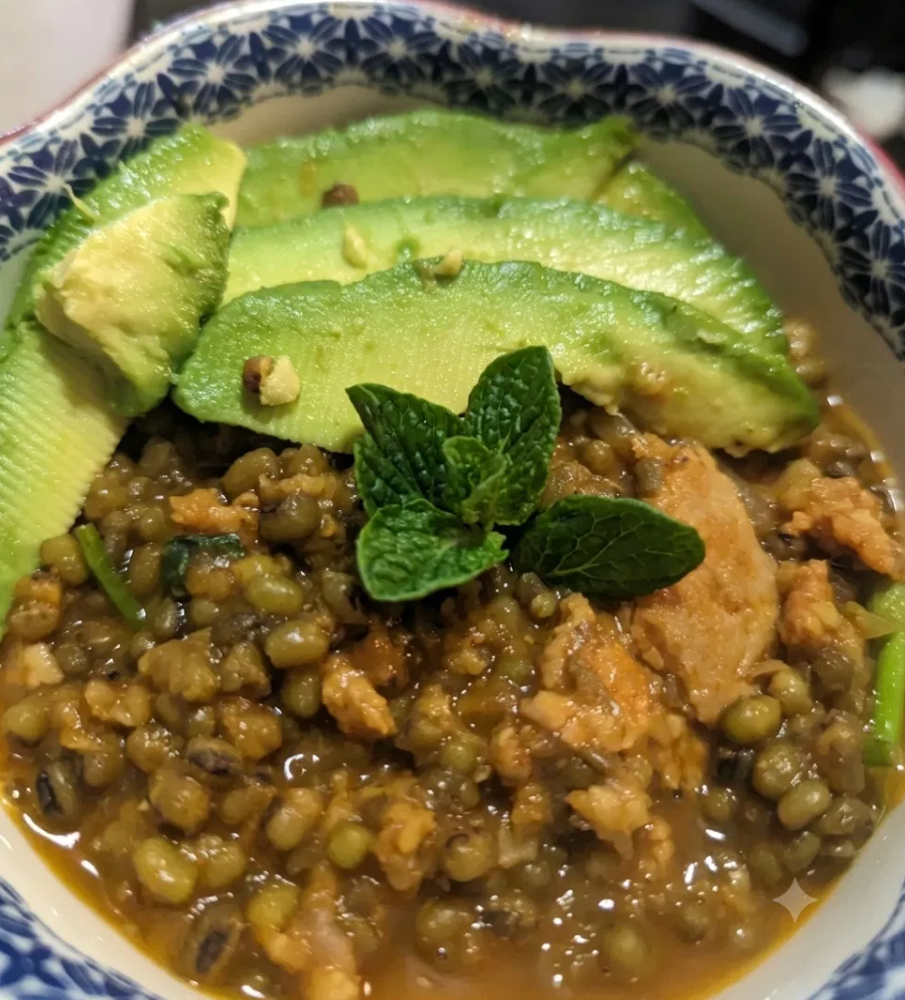

Green Grams (Ndengu)
Recipe & Narrative · East African Classics
What can grow from necessity will amaze you. Imagine a crop brought over to Kenya by Asian traders, then being adopted as a staple food crop, then we witness nature getting involved. Due to climate change, we saw many crops rendered unstable, but this miracle little bean remains productive and even thrives in adverse conditions, outpacing other established crops to readiness to harvest thus becoming a sought after crop to sustain many families, so much so that when Kenya faced erratic weather and prolonged drought seasons the Government and Agricultural agencies identified it as a strategic crop for families to grow. Now imagine that same crop seeing a boom in the 2010s becoming a major income generating crop especially in counties like Kitui, Makueni, Machakos, and Tharaka Nithi, which to this day account for the vast majority of Kenya's production of Green Grams, known locally as Ndengu. Also leading an international export boom, sending the crop to markets across Asia and the Middle East, with an industry valued in the multi billion shillings.
That's a very brief, but informative history on a legume that many Kenyans have grown to love, whether cooked as a stew alongside Chapatis or paired with Mukimo it is a favorite on many plates throughout the nation and around the world.
My introduction came from a very good friend. We used to share recipes and talk about dishes and she had stories about her grandma cooking many foods, but she held a particularly special place in her heart for grandma's Mukimo and Green Grams. She recalled racing home to help her prepare supper often and her favorite time with grandma in the kitchen was Green Gram night. For them like many other families it was a crop they grew and harvested for their stocks. I remember first seeing the beans. No local grocer had them — I had to order online, and that 2lb bag cost me $17. Something about that little green bean reminded me of a bug, I thought they were funny looking, but I took her recipe and prepared Green Gram stew and I understood immediately why she loved it so much. It's now a dish I make regularly and it makes me feel closer to home.
Ingredients
Green Grams (Ndengu)
- 1 lb whole mung beans (Green Grams), soaked overnight
- 1 large onion, diced
- 1 large bell pepper, diced
- 2 cans fire-roasted diced tomatoes (or 2 fresh tomatoes, diced)
- 1 head garlic, minced
- Celery, diced
- Parsley, chopped
- Carrots, grated
- 2 tbsp chicken bouillon powder
- 1 tbsp onion powder
- 1 tbsp garlic powder
- 1 tbsp curry powder
- 1 tsp garam masala
Method
Soak the mung beans overnight. Dice your onion, garlic, celery, and parsley; grate the carrots.
In a pot, heat oil and add the onion, garlic, celery, bell pepper, and parsley. Cook, stirring, until the onions turn golden brown.
Add the grated carrots and rinsed mung beans, stirring to coat. Add the diced tomatoes, chicken bouillon, onion powder, garlic powder, curry powder, and garam masala.
Stir well, add water to cover, and let simmer for 2 hours, or until the mung beans are tender. Serve with your favorite side dish, options include Mukimo, Chapatis, Avocado, or whatever you favor.
Closing
For me Green Gram night doesn't need any particular occasion. I'll make it on a random Tuesday because I was craving it, somehow it feels familiar, like a home I have yet to settle in. My friend's grandmother spent a lifetime turning this little bean into something worth racing home for, and every time I make it, I understand a little more of what that racing felt like. I never got to sit in her kitchen, but I like to think this pot I stir, however many miles and years removed, is still hers.
— Chef Dumela